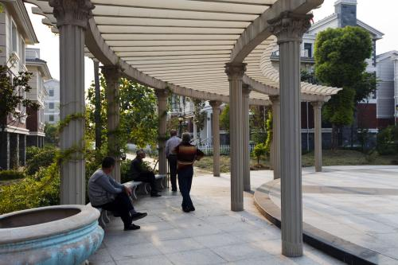
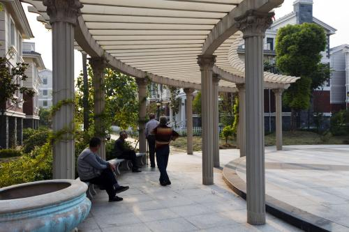

社区发展规划
一、社区建设的指导思想以邓小平理论、“三个代表”重要思想为指导，按照落实科学发展观和构建社会主义和谐社会的要求，以党的领导为核心、以服务居民为重点、以居民自治为方向、以文化活动为载体、以社区稳定为基础、以和谐社区建设为目标，完善社区功能，为构建和谐社区夯实基础。
二、社区建设的基本原则
（一）以人为本，服务居民。坚持以服务社区居民为重点，以不断满足居民日益增长的物质和文化需求为宗旨，以社区居民广泛参与为目的，使社区建设事业充满生机和活力。
（二）因地制宜，循序渐进。坚持以实际和需要出发，制定科学合理的发展规划。从居民群众关心的热点、难点问题入手，深入基层，加强指导，总结经验，有计划、有步骤实现社区建设的发展目标。
三、社区建设的发展目标紧紧围绕构建“青城”这个主题，从建设和谐家庭、和谐小区、和谐社区入手，以创建和谐标兵社区为重点，按照“民主管理型、诚信文明型、服务保障型、平安温馨型、环境优美型、学习创新型”六型标准要求，把青城社区建设成为居民自治、管理有序、服务完善、治安良好、环境优美、文明祥和的有特色的和谐社区。
四、社区建设的主要任务
（一）完善居民自治，推进社区民主。进一步完善社区居委会民主自治功能，扎实推进居民自治制度化、规范化、程序化，充分调动居民群众参与社区事务管理、建设和谐社区的积极性。1、健全和完善社区自治运行机制的“一个核心、两个大会、三个机构、四支队伍”，充分发挥社区代表会议、居委会、居民小组长在社区民主自治中的主体作用，探索社区、小组自治的新方式。2、深化社区民主政治建设，畅通社区民意渠道。建立健全公开透明的办事制度、办事程序，组织引导居民参与社区建设，保障居民群众的参与权和知情权；居民自治范围内的事项，决策前要依程序，充分发扬民主，保障居民群众的决策权；
3、加强社区组织建设。进一步加强以社区党组织为核心、以社区居委会为主体、社区中介服务组织为补充的社区组织体系建设，形成社区管理与服务的合力。培养发展社区各类组织，提升社区组织和动员居民群众的能力。加强社区党组织和居委会干部的教育培训，每年培训不少于2次，不断提高解决实际问题和服务管理的能力。加大社区志愿者队伍培育力度。
（二）拓展社区服务领域，提高居民生活质量
1、完善社区服务机制。加强对社区服务的统筹规划和分类指导，发挥机制创新在社区服务中的作用，多渠道发展社区服务业，鼓励驻社区单位和个人兴办以便民利民为目的的社区服务项目。
2、大力发展老年福利服务事业。加强社区老年人学校、老年娱乐室、老年互动点和老年健身场地的运行管理。
3、推进社区卫生服务。加强社区卫生基础设施建设，优化站点覆盖，抓好社区卫生服务中心（站）标准化建设，健全完善社区突发公共卫生事件应急反应机制。
（三）强化社区治安，促进社区稳定。坚持以人为本、预防为主的原则，全面落实社区治安综合治理各项措施，实现“案发少、秩序好、群众满意”的目标。
1、维护社区稳定。健全完善社区治安防控体系，严格落实领导责任和目标管理责任。加强流动人口管理，完善场所管理，有效遏制邪教组织和“黄赌毒”等社会丑恶现象。
2、加强法制教育。深入开展普法宣传，加强社区法律服务工作，完善“法律进家中”制度，有效解决与居民群众利益相关的难点问题。
（四）繁荣社区文化，提高居民文明素质。以创建学习型社区为主题，大力培育各种文体娱乐群众组织和队伍，广泛开展文化、体育、教育、科普等居民群众喜闻乐见、健康向上的活动。
（五）改善社区环境，促进人与自然和谐发展。以建设整洁优美、生态有序、健康舒适的社区环境为目标，大力推进社区生态环境建设和环境治理。积极开展庭院增绿活动，推进生活垃圾分类收集，继续整治背街小巷，落实门前三包责任。
五、保障措施
（一）强化组织保障。要把社区建设摆上工作的重要议事日程，成立社区建设领导小组，建立工作制度，健全居委会主导、社会力量支持、群众广泛参与的社区建设工作运行机制。社区紧紧围绕服务群众、凝聚人心这一重点，进一步拓展工作领域，改进工作方式，推进工作创新。最广泛地动员、最积极地组织社区成员参与和谐社区建设，形成共建和谐社区的整体合力。
（二）提高经费保障。一是加大资金投入。二是建立多渠道、多元化社区建设资金筹措机制。三是规范经费管理和监督，保证社区建设经费的公开、透明和合理使用。
（三）完善制度保障。通过制定和落实各类政策和法规及制度，使社区建设工作有法可依、有章可循。
（四）加强调查研究。定期调查研究，及时协调解决社区建设中的困难和问题，总结推广先进经验。
六、为民办实事
（一）结合儒林雅苑建成竣工，解决儒林社区一组王厝片区的道路硬化，改善片区的居住环境。
（二）完善新安小区的景观提升，对脏、乱、差的地方进行整治。加快张氏古厝改造建设，进一步提高小区的品位，在提档升级的同时，重点解决居民住房。
（三）逐步提高社会福利，在发展经济的同时，充分考虑群众的福利待遇，让更多的特困家庭、计生困难户、二女户、党员困难户给予一定生活、医疗补助。重视老人事业，提高年满60周岁老人的慰问金。
（四）积极配合北路二期工程建设。为居民营造一个舒适、优美、宜居的生活环境。
（五）进一步提高社区服务中心的服务质量，在原有的基础上，增加家政服务项目，扩大服务范围，形成一个综合性的社区服务中心。
 
